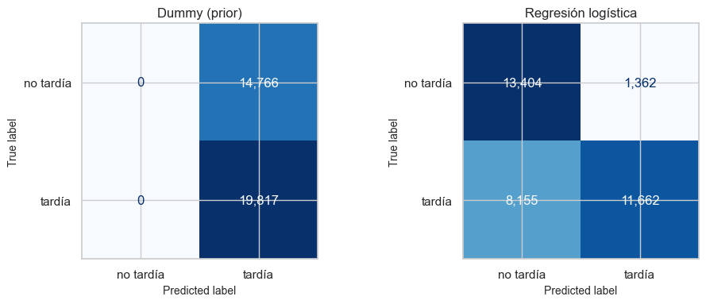
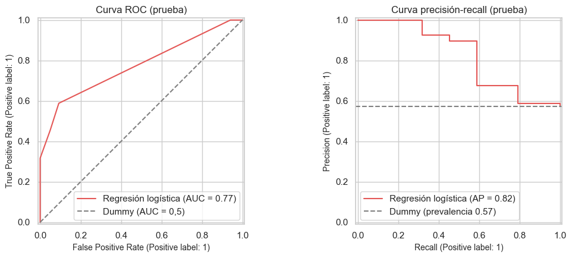
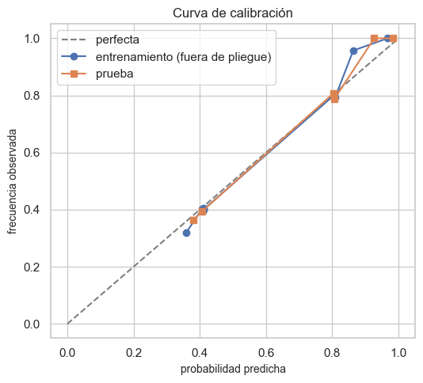
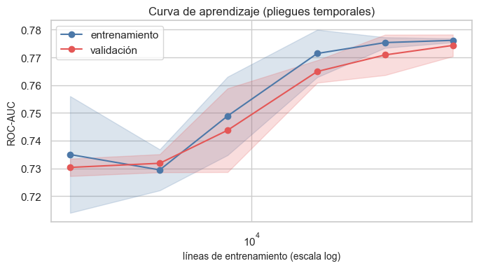
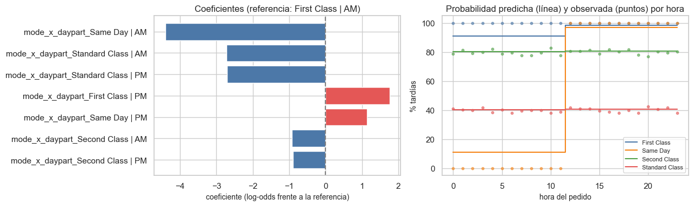
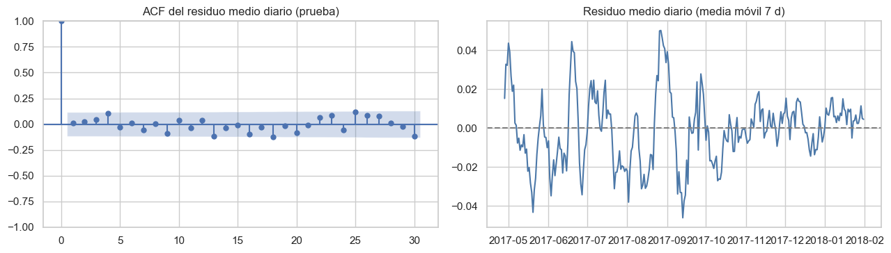

11. Modelo base: línea base trivial y regresión logística#
from pathlib import Path
import re, sys, warnings
import numpy as np
import pandas as pd
import matplotlib.pyplot as plt
import seaborn as sns
from IPython.display import Markdown, display
project_root = Path.cwd().resolve()
while not (project_root / "_config.yml").exists():
if project_root.parent == project_root:
raise FileNotFoundError("No se encontró _config.yml. Ejecuta el notebook dentro de la carpeta del libro.")
project_root = project_root.parent
if str(project_root) not in sys.path:
sys.path.insert(0, str(project_root))
for _folder in ("tables", "figures"): # se crean si no existen
(project_root / _folder).mkdir(exist_ok=True)
from src.project_utils import *
configure_plots()
pd.set_option("display.max_columns", 80)
pd.set_option("display.width", 170)
pd.set_option("display.max_colwidth", 70)
TABLES = project_root / "tables"
def md_out(text):
display(Markdown(text))
import json
from scipy import stats
from sklearn.dummy import DummyClassifier
from sklearn.model_selection import cross_validate, GroupKFold
from sklearn.metrics import (make_scorer, recall_score, f1_score, roc_curve, RocCurveDisplay,
PrecisionRecallDisplay, ConfusionMatrixDisplay, roc_auc_score, brier_score_loss)
from sklearn.calibration import calibration_curve
from statsmodels.stats.diagnostic import acorr_ljungbox
from statsmodels.graphics.tsaplots import plot_acf
warnings.filterwarnings("ignore", message="Found unknown categories")
decision = pd.read_csv(TABLES / "decision_poblacion.csv").iloc[0]
incl = not bool(decision["excluir_cancelados"])
train, test = load_train(include_canceled=incl), load_test(include_canceled=incl)
sel = json.loads((TABLES / "modelo_elegido.json").read_text(encoding="utf-8"))
conjuntos = json.loads((TABLES / "conjuntos_variables.json").read_text(encoding="utf-8"))
nl, nlog, cat = sel["num_lin"], sel["num_log"], sel["cat"]
COLS = nl + nlog + cat
Xtr, ytr, Xte, yte = train[COLS], train[TARGET], test[COLS], test[TARGET]
gtr, gte = train[ORDER_COL], test[ORDER_COL]
folds = temporal_folds(train[DATE_COL])
md_out(f"- **Variables del modelo** ({sel['conjunto']}): {', '.join(f'`{c}`' for c in COLS)}\n"
f"- **Entrenamiento:** {es(len(train), 0)} líneas, {es(gtr.nunique(), 0)} pedidos, {train[DATE_COL].min():%Y-%m-%d} a {train[DATE_COL].max():%Y-%m-%d}; tardías {es(ytr.mean(), 1, pct=True)}\n"
f"- **Prueba:** {es(len(test), 0)} líneas, {es(gte.nunique(), 0)} pedidos, {test[DATE_COL].min():%Y-%m-%d} a {test[DATE_COL].max():%Y-%m-%d}; tardías {es(yte.mean(), 1, pct=True)}\n"
f"- Pedidos cancelados/fraude excluidos: {'sí' if not incl else 'no'} (cap. 9)")
Variables del modelo (C · modo × jornada (interacción)):
mode_x_daypartEntrenamiento: 137.043 líneas, 45.669 pedidos, 2015-01-01 a 2017-04-14; tardías 57,3 %
Prueba: 34.583 líneas, 16.850 pedidos, 2017-04-22 a 2018-01-31; tardías 57,3 %
Pedidos cancelados/fraude excluidos: sí (cap. 9)
1. Hiperparámetro de regularización (solo con validación cruzada temporal)#
La regresión logística usa penalización L2 con intensidad 1/C. Se elige C por ROC-AUC
medio en los pliegues temporales del entrenamiento; la prueba no interviene.
grid = [0.001, 0.01, 0.1, 1.0, 10.0]
filas = []
for C in grid:
s = cross_validate(make_model_pipeline(nl, nlog, cat, C=C), Xtr, ytr, cv=folds, scoring="roc_auc")["test_score"]
filas.append({"C": C, "ROC-AUC media": s.mean(), "desv.": s.std()})
tuning = pd.DataFrame(filas)
tuning.to_csv(TABLES / "ajuste_C.csv", index=False)
C_best = float(tuning.loc[tuning["ROC-AUC media"].idxmax(), "C"])
display(tuning.round(5))
md_out(f"`C` elegido: **{C_best}**. Las diferencias entre valores son mínimas: con pocas variables y n grande la regularización casi no influye.")
def nuevo_modelo(cols=None):
if cols is None:
return make_model_pipeline(nl, nlog, cat, C=C_best)
return make_model_pipeline(cols["num_lin"], cols["num_log"], cols["cat"], C=C_best)
| C | ROC-AUC media | desv. | |
|---|---|---|---|
| 0 | 0.001 | 0.74137 | 0.00996 |
| 1 | 0.010 | 0.77433 | 0.00350 |
| 2 | 0.100 | 0.77403 | 0.00329 |
| 3 | 1.000 | 0.77403 | 0.00329 |
| 4 | 10.000 | 0.77414 | 0.00316 |
C elegido: 0.01. Las diferencias entre valores son mínimas: con pocas variables y n grande la regularización casi no influye.
2. Validación cruzada: temporal (principal), bloques espaciales y aleatoria por pedido#
Se reporta media ± desviación entre pliegues. El esquema temporal es el que corresponde al uso previsto (predecir pedidos futuros). Los otros dos se reportan por separado para comprobar si la estructura espacial o la agrupación inflan el desempeño.
scoring = {"accuracy": "accuracy",
"recall": make_scorer(recall_score, zero_division=0), "f1": make_scorer(f1_score, zero_division=0),
"roc_auc": "roc_auc", "average_precision": "average_precision", "brier": "neg_brier_score"}
celdas = spatial_cells(train[LAT], train[LON]).to_numpy()
esquemas = {
"Temporal con gap 7 d (principal)": (folds, None),
"Bloques espaciales (GroupKFold por celda 1°)": (list(GroupKFold(n_splits=5).split(Xtr, ytr, groups=celdas)), None),
"Aleatoria agrupada por pedido (GroupKFold)": (list(GroupKFold(n_splits=5).split(Xtr, ytr, groups=gtr)), None),
}
modelos = {"Dummy (prior)": lambda: DummyClassifier(strategy="prior"), "Regresión logística": nuevo_modelo,
"Sensibilidad: LR con todas las variables del pedido (D)": lambda: nuevo_modelo(conjuntos["D · pedido completo + interacción (sin destino)"])}
filas = []
for esquema, (cv_, _) in esquemas.items():
for nombre, fabrica in modelos.items():
if esquema != "Temporal con gap 7 d (principal)" and nombre.startswith("Sensibilidad"):
continue
Xuse = train[sum(conjuntos["D · pedido completo + interacción (sin destino)"].values(), [])] if nombre.startswith("Sensibilidad") else Xtr
r = cross_validate(fabrica(), Xuse, ytr, cv=cv_, scoring=scoring)
fila = {"esquema": esquema, "modelo": nombre}
for k in scoring:
v = r[f"test_{k}"] * (-1 if k == "brier" else 1)
fila[f"{k}"] = f"{v.mean():.4f} ± {v.std():.4f}"
fila[f"_{k}_mean"] = v.mean()
filas.append(fila)
cv_res = pd.DataFrame(filas)
cv_res.to_csv(TABLES / "cv_resumen.csv", index=False)
display(cv_res[[c for c in cv_res.columns if not c.startswith("_")]])
| esquema | modelo | accuracy | recall | f1 | roc_auc | average_precision | brier | |
|---|---|---|---|---|---|---|---|---|
| 0 | Temporal con gap 7 d (principal) | Dummy (prior) | 0.5734 ± 0.0025 | 1.0000 ± 0.0000 | 0.7288 ± 0.0020 | 0.5000 ± 0.0000 | 0.5734 ± 0.0025 | 0.2446 ± 0.0004 |
| 1 | Temporal con gap 7 d (principal) | Regresión logística | 0.7216 ± 0.0019 | 0.5839 ± 0.0047 | 0.7063 ± 0.0032 | 0.7743 ± 0.0035 | 0.8230 ± 0.0029 | 0.1773 ± 0.0011 |
| 2 | Temporal con gap 7 d (principal) | Sensibilidad: LR con todas las variables del pedido (D) | 0.7216 ± 0.0019 | 0.5839 ± 0.0047 | 0.7063 ± 0.0032 | 0.7717 ± 0.0024 | 0.8539 ± 0.0021 | 0.1774 ± 0.0011 |
| 3 | Bloques espaciales (GroupKFold por celda 1°) | Dummy (prior) | 0.5728 ± 0.0021 | 1.0000 ± 0.0000 | 0.7284 ± 0.0017 | 0.5000 ± 0.0000 | 0.5728 ± 0.0021 | 0.2447 ± 0.0003 |
| 4 | Bloques espaciales (GroupKFold por celda 1°) | Regresión logística | 0.7232 ± 0.0052 | 0.5864 ± 0.0090 | 0.7082 ± 0.0066 | 0.7759 ± 0.0059 | 0.8236 ± 0.0032 | 0.1759 ± 0.0016 |
| 5 | Aleatoria agrupada por pedido (GroupKFold) | Dummy (prior) | 0.5732 ± 0.0030 | 1.0000 ± 0.0000 | 0.7287 ± 0.0025 | 0.5000 ± 0.0000 | 0.5732 ± 0.0030 | 0.2447 ± 0.0004 |
| 6 | Aleatoria agrupada por pedido (GroupKFold) | Regresión logística | 0.7227 ± 0.0054 | 0.5852 ± 0.0100 | 0.7074 ± 0.0068 | 0.7753 ± 0.0025 | 0.8235 ± 0.0025 | 0.1760 ± 0.0016 |
Interpretación. En validación temporal la regresión logística obtiene un ROC-AUC ≈ 0,77 frente a 0,50 del Dummy, y un accuracy ≈ 0,72 frente a ≈ 0,57. Los tres esquemas dan resultados casi idénticos: como el objetivo no tiene autocorrelación espacial (cap. 8) ni temporal (cap. 7), la validación aleatoria no estaría inflada en este caso; aun así el esquema que se reporta como principal es el temporal. El modelo con todas las variables del pedido (sensibilidad) no mejora: la señal sin fuga está en el modo de envío y, para Same Day, en la jornada del pedido.
3. Ajuste final y evaluación única en la prueba#
Ambos modelos se ajustan con todo el entrenamiento y se evalúan una sola vez en la prueba, con umbral 0,5.
dummy = DummyClassifier(strategy="prior").fit(Xtr, ytr)
lr = nuevo_modelo().fit(Xtr, ytr)
p_dummy, p_lr = dummy.predict_proba(Xte)[:, 1], lr.predict_proba(Xte)[:, 1]
pred_dummy, pred_lr = dummy.predict(Xte), (p_lr >= 0.5).astype(int)
res = pd.DataFrame([classification_metrics(yte, pred_dummy, p_dummy), classification_metrics(yte, pred_lr, p_lr)],
index=["Dummy (prior)", "Regresión logística"])
res.to_csv(TABLES / "resultados_prueba.csv")
techo = pd.read_csv(TABLES / "techo_sin_fuga.csv")
tasa_celda = train.groupby("mode_x_daypart")[TARGET].mean()
p_tabla = test["mode_x_daypart"].map(tasa_celda).fillna(ytr.mean()).to_numpy()
res.loc["Referencia: tabla de tasas modo × jornada (techo empírico)"] = classification_metrics(yte, (p_tabla >= 0.5).astype(int), p_tabla)
res.to_csv(TABLES / "resultados_prueba.csv")
display(res.round(4))
md_out(f"**ROC-AUC en la prueba (DataCo sin fuga): {es(res.loc['Regresión logística', 'ROC-AUC'], 4)}** frente a {es(res.loc['Dummy (prior)', 'ROC-AUC'], 2)} de la línea base.")
| Accuracy | Recall | F1 | ROC-AUC | Average Precision | Brier | |
|---|---|---|---|---|---|---|
| Dummy (prior) | 0.5730 | 1.0000 | 0.7286 | 0.5000 | 0.5730 | 0.2447 |
| Regresión logística | 0.7248 | 0.5885 | 0.7102 | 0.7746 | 0.8239 | 0.1753 |
| Referencia: tabla de tasas modo × jornada (techo empírico) | 0.7248 | 0.5885 | 0.7102 | 0.7746 | 0.8239 | 0.1743 |
ROC-AUC en la prueba (DataCo sin fuga): 0,7746 frente a 0,50 de la línea base.
fig, axes = plt.subplots(1, 2, figsize=(10, 4))
for ax, nombre, pred in zip(axes, ["Dummy (prior)", "Regresión logística"], [pred_dummy, pred_lr]):
ConfusionMatrixDisplay.from_predictions(yte, pred, display_labels=["no tardía", "tardía"], ax=ax, colorbar=False, cmap="Blues", values_format=",")
ax.set_title(nombre)
plt.tight_layout(); save_figure(fig, "11_matrices_confusion.png"); plt.show()
fig, axes = plt.subplots(1, 2, figsize=(11, 4.5))
RocCurveDisplay.from_predictions(yte, p_lr, name="Regresión logística", ax=axes[0], color="#e45756")
axes[0].plot([0, 1], [0, 1], "--", color="gray", label="Dummy (AUC = 0,5)"); axes[0].legend(); axes[0].set_title("Curva ROC (prueba)")
PrecisionRecallDisplay.from_predictions(yte, p_lr, name="Regresión logística", ax=axes[1], color="#e45756")
axes[1].axhline(yte.mean(), ls="--", color="gray", label=f"Dummy (prevalencia {yte.mean():.2f})"); axes[1].legend(); axes[1].set_title("Curva precisión-recall (prueba)")
plt.tight_layout(); save_figure(fig, "11_curvas_roc_pr.png"); plt.show()


Interpretación. El Dummy predice «tardía» para todos: recall 1, accuracy igual a la prevalencia y ROC-AUC 0,5. La regresión logística pone arriba a First Class y Same Day de la tarde (siempre tardíos), luego Second Class (80 %), Standard (40 %) y al final Same Day de la mañana (nunca tardío). La curva ROC es una poligonal de pocos vértices porque el puntaje solo toma 8 valores. El modelo iguala a la tabla de tasas por modo × jornada (el techo empírico sin fuga, cap. 9): no queda señal por extraer con estas variables. Con umbral 0,5 los Standard se predicen «no tardía», y como el 40 % de ellos sí se retrasa, el recall de la clase tardía queda en ≈ 0,6: esos retrasos son aleatorios en la simulación y no son predecibles.
4. Calibración#
Se revisa en la prueba y con predicciones fuera de pliegue del entrenamiento. El Brier (menor es mejor) se compara con el de predecir siempre la prevalencia.
oof = np.full(len(train), np.nan)
for tr_i, va_i in folds:
oof[va_i] = nuevo_modelo().fit(Xtr.iloc[tr_i], ytr.iloc[tr_i]).predict_proba(Xtr.iloc[va_i])[:, 1]
m_oof = ~np.isnan(oof)
f_te, mp_te = calibration_curve(yte, p_lr, n_bins=10, strategy="quantile")
f_oof, mp_oof = calibration_curve(ytr[m_oof], oof[m_oof], n_bins=10, strategy="quantile")
fig, ax = plt.subplots(figsize=(5.5, 5))
ax.plot([0, 1], [0, 1], "--", color="gray", label="perfecta")
ax.plot(mp_oof, f_oof, "o-", label="entrenamiento (fuera de pliegue)"); ax.plot(mp_te, f_te, "s-", label="prueba")
ax.set_xlabel("probabilidad predicha"); ax.set_ylabel("frecuencia observada"); ax.legend(); ax.set_title("Curva de calibración")
plt.tight_layout(); save_figure(fig, "11_calibracion.png"); plt.show()
cal = pd.DataFrame([{"conjunto": "prueba", "Brier modelo": brier_score_loss(yte, p_lr), "Brier prevalencia": brier_score_loss(yte, np.full(len(yte), ytr.mean()))},
{"conjunto": "entrenamiento OOF", "Brier modelo": brier_score_loss(ytr[m_oof], oof[m_oof]), "Brier prevalencia": brier_score_loss(ytr[m_oof], np.full(m_oof.sum(), ytr.mean()))}])
cal["mejora_%"] = 100 * (1 - cal["Brier modelo"] / cal["Brier prevalencia"])
cal.to_csv(TABLES / "calibracion.csv", index=False)
display(cal.round(4))

| conjunto | Brier modelo | Brier prevalencia | mejora_% | |
|---|---|---|---|---|
| 0 | prueba | 0.1753 | 0.2447 | 28.3363 |
| 1 | entrenamiento OOF | 0.1773 | 0.2446 | 27.5376 |
Interpretación. Las probabilidades están bien calibradas en el rango central (los puntos siguen la diagonal): cuando el modelo dice 40 % (Standard) se retrasa ≈ 40 %, y cuando dice 80 % (Second Class), ≈ 80 %. En los extremos la regularización las encoge un poco (dice ≈ 0,9 donde la tasa es 1 y ≈ 0,1 donde es 0). El Brier mejora frente a predecir la prevalencia. La calibración es la esperable en una regresión logística con variables categóricas y n grande.
5. Umbral de decisión#
El umbral 0,5 no es obligatorio. Se elige un umbral alternativo solo con las predicciones fuera de pliegue del entrenamiento (máximo índice de Youden) y se evalúa en la prueba.
fpr, tpr, thr = roc_curve(ytr[m_oof], oof[m_oof])
umbral = float(thr[np.argmax(tpr - fpr)])
pred_alt = (p_lr >= umbral).astype(int)
umb = pd.DataFrame([classification_metrics(yte, pred_lr, p_lr), classification_metrics(yte, pred_alt, p_lr)],
index=["umbral 0,5", f"umbral Youden OOF = {umbral:.3f}"])
umb.to_csv(TABLES / "umbral_alternativo.csv")
display(umb.round(4))
| Accuracy | Recall | F1 | ROC-AUC | Average Precision | Brier | |
|---|---|---|---|---|---|---|
| umbral 0,5 | 0.7248 | 0.5885 | 0.7102 | 0.7746 | 0.8239 | 0.1753 |
| umbral Youden OOF = 0.806 | 0.6663 | 0.4545 | 0.6095 | 0.7746 | 0.8239 | 0.1753 |
Interpretación. Como el puntaje solo toma 8 valores, cambiar el umbral equivale a decidir qué celdas se marcan como «tardía». Youden (elegido sin mirar la prueba) sube el umbral y deja fuera a Second Class: pierde recall y accuracy a cambio de menos falsas alarmas. El umbral es una decisión operativa (costo de una falsa alarma frente al de un retraso no anticipado) que no cambia el ROC-AUC; por eso la métrica principal es independiente del umbral.
6. Intervalos de confianza: bootstrap por pedido#
Remuestrear filas subestimaría la incertidumbre, porque las líneas de un pedido comparten etiqueta. Se remuestrean pedidos completos (1.000 réplicas), intervalo percentil del 95 %. Para comparar con el Dummy se usan los mismos pedidos remuestreados en ambos modelos.
ic = cluster_bootstrap(yte, pred_lr, p_lr, gte, B=1000)
ic_d = cluster_bootstrap(yte, pred_dummy, p_dummy, gte, B=1000)
dif = paired_cluster_bootstrap(yte, pred_lr, p_lr, pred_dummy, p_dummy, gte, B=1000)
ic.to_csv(TABLES / "intervalos_bootstrap_logistica.csv"); ic_d.to_csv(TABLES / "intervalos_bootstrap_dummy.csv"); dif.to_csv(TABLES / "diferencias_vs_dummy.csv")
md_out("**Regresión logística (prueba):**"); display(ic.round(4))
md_out("**Dummy (prueba):**"); display(ic_d.round(4))
md_out("**Diferencia regresión logística − Dummy (mismos pedidos remuestreados):**"); display(dif.round(4))
auc_ic = ic.loc["ROC-AUC"]
md_out(f"ROC-AUC = **{es(auc_ic.iloc[0], 4)}** (IC 95 %: {es(auc_ic.iloc[1], 4)} – {es(auc_ic.iloc[2], 4)}). "
f"La mejora en ROC-AUC frente al Dummy es {es(dif.loc['ROC-AUC', 'Diferencia'], 4)} (IC: {es(dif.loc['ROC-AUC', 'IC inferior'], 4)} – {es(dif.loc['ROC-AUC', 'IC superior'], 4)}): "
+ ("**el intervalo no incluye 0**." if dif.loc['ROC-AUC', 'IC inferior'] > 0 else "el intervalo incluye 0."))
Regresión logística (prueba):
| Estimación | IC 95 % inferior | IC 95 % superior | |
|---|---|---|---|
| Métrica | |||
| Accuracy | 0.7248 | 0.7170 | 0.7325 |
| Recall | 0.5885 | 0.5763 | 0.5998 |
| F1 | 0.7102 | 0.7004 | 0.7192 |
| ROC-AUC | 0.7746 | 0.7668 | 0.7825 |
| Average Precision | 0.8239 | 0.8168 | 0.8309 |
| Brier | 0.1753 | 0.1725 | 0.1783 |
Dummy (prueba):
| Estimación | IC 95 % inferior | IC 95 % superior | |
|---|---|---|---|
| Métrica | |||
| Accuracy | 0.5730 | 0.5638 | 0.5823 |
| Recall | 1.0000 | 1.0000 | 1.0000 |
| F1 | 0.7286 | 0.7211 | 0.7360 |
| ROC-AUC | 0.5000 | 0.5000 | 0.5000 |
| Average Precision | 0.5730 | 0.5638 | 0.5823 |
| Brier | 0.2447 | 0.2433 | 0.2460 |
Diferencia regresión logística − Dummy (mismos pedidos remuestreados):
| Diferencia | IC inferior | IC superior | |
|---|---|---|---|
| Métrica | |||
| Accuracy | 0.1518 | 0.1374 | 0.1662 |
| Recall | -0.4115 | -0.4237 | -0.4002 |
| F1 | -0.0184 | -0.0298 | -0.0076 |
| ROC-AUC | 0.2746 | 0.2668 | 0.2825 |
| Average Precision | 0.2508 | 0.2437 | 0.2580 |
| Brier | -0.0693 | -0.0722 | -0.0664 |
ROC-AUC = 0,7746 (IC 95 %: 0,7668 – 0,7825). La mejora en ROC-AUC frente al Dummy es 0,2746 (IC: 0,2668 – 0,2825): el intervalo no incluye 0.
7. Curva de aprendizaje#
Para cada pliegue temporal se entrena con fracciones crecientes de los datos más recientes anteriores al gap y se valida en el bloque siguiente (ROC-AUC).
fracs = [0.02, 0.05, 0.1, 0.25, 0.5, 1.0]
filas = []
for k, (tr_i, va_i) in enumerate(folds):
for f in fracs:
sub = tr_i[-max(200, int(f * len(tr_i))):]
m = nuevo_modelo().fit(Xtr.iloc[sub], ytr.iloc[sub])
filas.append({"pliegue": k, "fracción": f, "n_train": len(sub),
"AUC_train": roc_auc_score(ytr.iloc[sub], m.predict_proba(Xtr.iloc[sub])[:, 1]),
"AUC_valid": roc_auc_score(ytr.iloc[va_i], m.predict_proba(Xtr.iloc[va_i])[:, 1])})
lc = pd.DataFrame(filas)
curva = lc.groupby("fracción").agg(n_train=("n_train", "mean"), AUC_train=("AUC_train", "mean"), AUC_train_sd=("AUC_train", "std"),
AUC_valid=("AUC_valid", "mean"), AUC_valid_sd=("AUC_valid", "std"))
curva.to_csv(TABLES / "curva_aprendizaje.csv")
fig, ax = plt.subplots(figsize=(7, 4))
for col, c in [("AUC_train", "#4c78a8"), ("AUC_valid", "#e45756")]:
ax.plot(curva["n_train"], curva[col], "o-", color=c, label=col.replace("AUC_", "").replace("train", "entrenamiento").replace("valid", "validación"))
ax.fill_between(curva["n_train"], curva[col] - curva[f"{col}_sd"], curva[col] + curva[f"{col}_sd"], color=c, alpha=0.2)
ax.set_xscale("log"); ax.set_xlabel("líneas de entrenamiento (escala log)"); ax.set_ylabel("ROC-AUC"); ax.legend(); ax.set_title("Curva de aprendizaje (pliegues temporales)")
plt.tight_layout(); save_figure(fig, "11_curva_aprendizaje.png"); plt.show()
display(curva.round(4))

| n_train | AUC_train | AUC_train_sd | AUC_valid | AUC_valid_sd | |
|---|---|---|---|---|---|
| fracción | |||||
| 0.02 | 1566.2 | 0.7350 | 0.0211 | 0.7303 | 0.0031 |
| 0.05 | 3916.4 | 0.7294 | 0.0074 | 0.7318 | 0.0033 |
| 0.10 | 7833.0 | 0.7489 | 0.0141 | 0.7437 | 0.0151 |
| 0.25 | 19583.0 | 0.7714 | 0.0086 | 0.7649 | 0.0041 |
| 0.50 | 39166.8 | 0.7753 | 0.0019 | 0.7709 | 0.0073 |
| 1.00 | 78334.0 | 0.7761 | 0.0007 | 0.7743 | 0.0039 |
Interpretación. Las curvas de entrenamiento y validación están pegadas en todos los tamaños: no hay sobreajuste. El ROC-AUC de validación sube hasta ≈ 40.000 líneas (las celdas pequeñas, como Same Day, necesitan casos para estimarse bien frente a la penalización) y luego se estabiliza en el techo sin fuga: la muestra es suficiente y más datos no mejorarían este modelo. El límite es la información disponible sin fuga, no el tamaño de muestra.
8. Interpretación de coeficientes (odds ratios)#
Las numéricas están estandarizadas; en las categóricas, OneHotEncoder(drop='first') elimina
la primera categoría, que es la referencia. Son asociaciones ajustadas, no efectos causales.
orr = odds_ratio_table(lr)
refs = onehot_reference_table(lr, cat)
orr.to_csv(TABLES / "odds_ratios.csv", index=False); refs.to_csv(TABLES / "categorias_referencia_onehot.csv", index=False)
display(refs); display(orr.round(4))
md_out(f"Intercepto: {lr.named_steps['clf'].intercept_[0]:.3f} (log-odds de la categoría de referencia).")
# Probabilidad predicha por celda y por hora, frente a la tasa observada en entrenamiento
horas = np.arange(24)
grid_h = pd.DataFrame([(m, h) for m in sorted(train["shipping_mode"].unique()) for h in horas], columns=["shipping_mode", "order_hour"])
grid_h["order_afternoon"] = (grid_h["order_hour"] >= 12).astype(int)
grid_h["mode_x_daypart"] = grid_h["shipping_mode"] + np.where(grid_h["order_afternoon"] == 1, " | PM", " | AM")
grid_h["order_hour_sin"], grid_h["order_hour_cos"] = np.sin(2 * np.pi * grid_h["order_hour"] / 24), np.cos(2 * np.pi * grid_h["order_hour"] / 24)
for c in COLS:
if c not in grid_h:
grid_h[c] = train[c].mode().iloc[0] if c in cat else train[c].median()
grid_h["p"] = lr.predict_proba(grid_h[COLS])[:, 1]
prob_celda = (grid_h.groupby("mode_x_daypart")["p"].mean().rename("P predicha").to_frame()
.join(train.groupby("mode_x_daypart")[TARGET].agg(["mean", "size"]).rename(columns={"mean": "tasa observada (train)", "size": "líneas"})))
prob_celda.to_csv(TABLES / "probabilidad_por_celda.csv")
display(prob_celda.round(4))
obs_h = train.groupby(["shipping_mode", "order_hour"])[TARGET].mean().rename("obs").reset_index()
fig, axes = plt.subplots(1, 2, figsize=(13, 4))
o = orr.iloc[::-1]
axes[0].barh(o["variable"].str.replace("cat__", "").str.replace("num__", ""), o["coeficiente"], color=np.where(o["coeficiente"] > 0, "#e45756", "#4c78a8"))
axes[0].axvline(0, color="gray", ls="--"); axes[0].set_xlabel("coeficiente (log-odds frente a la referencia)")
axes[0].set_title(f"Coeficientes (referencia: {refs.iloc[0, 1]})")
for (m, g), c in zip(grid_h.groupby("shipping_mode"), ["#4c78a8", "#f58518", "#54a24b", "#e45756"]):
axes[1].step(g["order_hour"], 100 * g["p"], where="mid", color=c, label=m)
ob = obs_h[obs_h["shipping_mode"] == m]
axes[1].scatter(ob["order_hour"], 100 * ob["obs"], color=c, s=10, alpha=0.6)
axes[1].set_xlabel("hora del pedido"); axes[1].set_ylabel("% tardías"); axes[1].legend(fontsize=8)
axes[1].set_title("Probabilidad predicha (línea) y observada (puntos) por hora")
plt.tight_layout(); save_figure(fig, "11_odds_ratios.png"); plt.show()
| variable | categoría_referencia | |
|---|---|---|
| 0 | mode_x_daypart | First Class | AM |
| variable | coeficiente | odds_ratio | tipo | |
|---|---|---|---|---|
| 0 | cat__mode_x_daypart_Same Day | AM | -4.4040 | 0.0122 | indicador de categoría |
| 1 | cat__mode_x_daypart_Standard Class | AM | -2.7253 | 0.0655 | indicador de categoría |
| 2 | cat__mode_x_daypart_Standard Class | PM | -2.7075 | 0.0667 | indicador de categoría |
| 3 | cat__mode_x_daypart_First Class | PM | 1.7545 | 5.7807 | indicador de categoría |
| 4 | cat__mode_x_daypart_Same Day | PM | 1.1331 | 3.1052 | indicador de categoría |
| 5 | cat__mode_x_daypart_Second Class | AM | -0.9213 | 0.3980 | indicador de categoría |
| 6 | cat__mode_x_daypart_Second Class | PM | -0.9040 | 0.4049 | indicador de categoría |
Intercepto: 2.333 (log-odds de la categoría de referencia).
| P predicha | tasa observada (train) | líneas | |
|---|---|---|---|
| mode_x_daypart | |||
| First Class | AM | 0.9116 | 1.0000 | 10056 |
| First Class | PM | 0.9835 | 1.0000 | 10986 |
| Same Day | AM | 0.1120 | 0.0000 | 3911 |
| Same Day | PM | 0.9697 | 1.0000 | 3456 |
| Second Class | AM | 0.8040 | 0.7967 | 13600 |
| Second Class | PM | 0.8067 | 0.8001 | 13283 |
| Standard Class | AM | 0.4032 | 0.3964 | 41003 |
| Standard Class | PM | 0.4075 | 0.4008 | 40748 |

Interpretación de los coeficientes.
La referencia es la primera categoría (orden alfabético), First Class | AM. Cada coeficiente es el cambio en log-odds frente a ella. Hay separación casi completa: cuatro celdas tienen tasa observada de 0 % o 100 % (First Class y Same Day), y sin penalización sus coeficientes tenderían a ±∞. La penalización L2 elegida por validación (
C= 0,01) los acota y encoge las probabilidades extremas hacia la media (por ejemplo, 0,91 en lugar de 1 para First Class | AM, que además queda distinta de First Class | PM solo porque la referencia se absorbe en el intercepto). Eso apenas afecta al orden (ROC-AUC); lo interpretable son las probabilidades predichas de la tabla.Same Day | AM tiene el coeficiente más negativo (nunca se retrasa) y Same Day | PM queda al nivel de First Class (siempre se retrasa): es la hora de corte del mediodía.
Paradoja de la promesa: los envíos más rápidos prometidos son los que más se retrasan. First Class promete 1 día y tarda 2; Standard promete 4 y tarda entre 2 y 6. El riesgo depende de lo ajustada que es la promesa, no de la velocidad del transporte. Una recomendación operativa directa sería revisar la promesa de First Class y el corte de Same Day, más que priorizar pedidos uno a uno.
Son asociaciones en datos simulados; no prueban causalidad.
9. Diagnóstico de residuos: dependencia temporal y espacial#
En clasificación, el residuo es y − p̂. Si el modelo dejara estructura sin capturar, los
residuos promediados por día estarían autocorrelacionados (ACF, Ljung-Box) o los residuos
por celda espacial tendrían I de Moran significativa.
res_te = test.assign(resid=yte - p_lr)
dia = res_te.groupby(res_te[DATE_COL].dt.normalize())["resid"].mean()
lb = acorr_ljungbox(dia, lags=[7, 14, 28], return_df=True)
cel = res_te.assign(c=spatial_cells(res_te[LAT], res_te[LON]).to_numpy()).groupby("c").agg(n=("resid", "size"), r=("resid", "mean"), lat=(LAT, "mean"), lon=(LON, "mean"))
cel = cel[cel["n"] >= 30]
mi_res = morans_i(cel["r"], knn_weights(cel["lat"], cel["lon"], k=8))
fig, axes = plt.subplots(1, 2, figsize=(13, 3.8))
plot_acf(dia, lags=30, ax=axes[0]); axes[0].set_title("ACF del residuo medio diario (prueba)")
axes[1].plot(dia.index, dia.rolling(7).mean(), color="#4c78a8"); axes[1].axhline(0, color="gray", ls="--")
axes[1].set_title("Residuo medio diario (media móvil 7 d)")
plt.tight_layout(); save_figure(fig, "11_residuos_tiempo.png"); plt.show()
diag = pd.DataFrame([{"diagnóstico": f"Ljung-Box residuo diario, rezago {k}", "estadístico": r.lb_stat, "p": r.lb_pvalue} for k, r in lb.iterrows()]
+ [{"diagnóstico": f"I de Moran del residuo por celda ({len(cel)} celdas)", "estadístico": mi_res["I"], "p": mi_res["p_permutacion"]}])
diag.to_csv(TABLES / "diagnostico_residuos.csv", index=False)
display(diag.round(4))

| diagnóstico | estadístico | p | |
|---|---|---|---|
| 0 | Ljung-Box residuo diario, rezago 7 | 5.1598 | 0.6405 |
| 1 | Ljung-Box residuo diario, rezago 14 | 13.5084 | 0.4869 |
| 2 | Ljung-Box residuo diario, rezago 28 | 36.9455 | 0.1201 |
| 3 | I de Moran del residuo por celda (132 celdas) | -0.0099 | 0.9120 |
Interpretación. Si Ljung-Box y Moran no rechazan, los residuos no tienen dependencia temporal ni espacial: el modelo no deja sin capturar estructura de tiempo o espacio. Esto es coherente con el EDA (capítulos 7 y 8). Lo que el modelo no explica es variación idiosincrática de cada pedido, no un patrón estructural.
10. Desempeño por subgrupos y deriva en la prueba#
Se revisa si el modelo rinde parecido por mercado, segmento, modo de envío y periodo (antes/después del cambio de régimen de octubre de 2017, cap. 7). Solo grupos con ≥ 300 líneas y ambas clases. También se mide la deriva de covariables entre entrenamiento y prueba (PSI), como diagnóstico posterior a la evaluación (no se usa para decidir nada).
Fte = test.assign(p=p_lr, pred=pred_lr, periodo=np.where(test[DATE_COL] >= "2017-10-01", "desde oct-2017 (1 línea/pedido)", "abr–sep 2017"))
def por_grupo(col, min_n=300):
filas = []
for g, d_ in Fte.groupby(col):
if len(d_) < min_n or d_[TARGET].nunique() < 2:
continue
filas.append({"variable": col, "grupo": g, "n": len(d_), "tardías_%": 100 * d_[TARGET].mean(),
"ROC-AUC": roc_auc_score(d_[TARGET], d_["p"]), "Accuracy": (d_[TARGET] == d_["pred"]).mean(),
"Recall": recall_score(d_[TARGET], d_["pred"], zero_division=0)})
return pd.DataFrame(filas)
sub = pd.concat([por_grupo(c) for c in ["market", "customer_segment", "shipping_mode", "periodo"]], ignore_index=True)
sub.to_csv(TABLES / "desempeno_subgrupos.csv", index=False)
display(sub.round(4))
cols_psi = {"shipping_mode": True, "order_hour": False, "payment_type": True, "customer_segment": True, "market": True,
"items_in_order": False, "category_name": True, "sales": False}
psi_tt = pd.DataFrame([{"variable": c, "PSI train→test": psi(train[c], test[c], categorical=k)} for c, k in cols_psi.items()])
psi_tt["nivel"] = pd.cut(psi_tt["PSI train→test"], [-1, 0.1, 0.25, 99], labels=["estable", "moderada", "fuerte"])
psi_tt.to_csv(TABLES / "deriva_train_test.csv", index=False)
display(psi_tt.round(4))
| variable | grupo | n | tardías_% | ROC-AUC | Accuracy | Recall | |
|---|---|---|---|---|---|---|---|
| 0 | market | Europe | 19943 | 57.4738 | 0.7791 | 0.7296 | 0.5973 |
| 1 | market | LATAM | 9260 | 56.5443 | 0.7649 | 0.7160 | 0.5689 |
| 2 | market | Pacific Asia | 5380 | 57.9740 | 0.7745 | 0.7221 | 0.5890 |
| 3 | customer_segment | Consumer | 17876 | 57.2779 | 0.7708 | 0.7195 | 0.5800 |
| 4 | customer_segment | Corporate | 10497 | 56.7210 | 0.7780 | 0.7334 | 0.6033 |
| 5 | customer_segment | Home Office | 6210 | 58.3575 | 0.7799 | 0.7254 | 0.5880 |
| 6 | shipping_mode | Same Day | 1865 | 52.9223 | 1.0000 | 1.0000 | 1.0000 |
| 7 | shipping_mode | Second Class | 6743 | 79.8013 | 0.4849 | 0.7980 | 1.0000 |
| 8 | shipping_mode | Standard Class | 20681 | 39.4323 | 0.4999 | 0.6057 | 0.0000 |
| 9 | periodo | abr–sep 2017 | 26390 | 57.2490 | 0.7742 | 0.7248 | 0.5884 |
| 10 | periodo | desde oct-2017 (1 línea/pedido) | 8193 | 57.4759 | 0.7756 | 0.7248 | 0.5889 |
| variable | PSI train→test | nivel | |
|---|---|---|---|
| 0 | shipping_mode | 0.0000 | estable |
| 1 | order_hour | 0.0005 | estable |
| 2 | payment_type | 0.0002 | estable |
| 3 | customer_segment | 0.0000 | estable |
| 4 | market | 3.5232 | fuerte |
| 5 | items_in_order | 0.3690 | fuerte |
| 6 | category_name | 2.8882 | fuerte |
| 7 | sales | 0.0383 | estable |
Interpretación. Dentro de Second y Standard Class el ROC-AUC es ≈ 0,5: el modelo da la misma probabilidad a todos sus pedidos, porque su retraso es aleatorio. Dentro de Same Day es 1: la jornada lo determina. (First Class no aparece porque solo tiene una clase.) Entre mercados, segmentos y periodos el desempeño es homogéneo: el modelo no perjudica a un mercado o segmento en particular, y el cambio de régimen de finales de 2017 (pedidos de una línea, otro catálogo) no degrada el ROC-AUC porque las variables del modelo (modo y jornada) son estables (PSI bajo). Las variables con deriva fuerte (mercado, catálogo, ítems por pedido) no están en el modelo: la selección del capítulo 10 lo protegió de esa deriva.
11. Auditoría del criterio «accuracy ≥ 80–90 %» (nota crítica)#
acc_lr, acc_d = res.loc["Regresión logística", "Accuracy"], res.loc["Dummy (prior)", "Accuracy"]
auc_lr = res.loc["Regresión logística", "ROC-AUC"]
con_sin = pd.read_csv(TABLES / "con_fuga_vs_sin_fuga.csv")
nota = pd.DataFrame([
("¿Accuracy ≥ 80 %?", f"No: {es(acc_lr, 3)} (Dummy {es(acc_d, 3)})"),
("Verificar fuga (2.5–2.8)", "Hecho: variables posteriores excluidas (cap. 9); con fuga el AUC sería "
f"{es(con_sin.iloc[0, 1], 3)}; partición y CV temporales con gap; sin pedidos compartidos"),
("Comparar con línea base trivial", f"ROC-AUC {es(auc_lr, 3)} vs 0,5; accuracy +{es(100 * (acc_lr - acc_d), 1)} puntos"),
("¿La validación respeta tiempo y espacio?", "Sí: temporal con gap (principal) y bloques espaciales (adicional) dan lo mismo"),
("Complejidad del dataset", "Datos simulados: sin fuga, la señal está en modo de envío × jornada; Standard y Second Class son aleatorios"),
("¿Problema trivial?", f"No: el techo sin fuga es moderado (ROC-AUC {es(techo.iloc[0]['ROC-AUC'], 3)}, accuracy {es(techo.iloc[0]['Accuracy'], 3)}); "
"el «AUC ≈ 1» de DataCo solo aparece con fuga"),
], columns=["pregunta del enunciado", "respuesta"])
nota.to_csv(TABLES / "auditoria_nota_critica.csv", index=False)
nota
| pregunta del enunciado | respuesta | |
|---|---|---|
| 0 | ¿Accuracy ≥ 80 %? | No: 0,725 (Dummy 0,573) |
| 1 | Verificar fuga (2.5–2.8) | Hecho: variables posteriores excluidas (cap. 9); con fuga el AUC s... |
| 2 | Comparar con línea base trivial | ROC-AUC 0,775 vs 0,5; accuracy +15,2 puntos |
| 3 | ¿La validación respeta tiempo y espacio? | Sí: temporal con gap (principal) y bloques espaciales (adicional) ... |
| 4 | Complejidad del dataset | Datos simulados: sin fuga, la señal está en modo de envío × jornad... |
| 5 | ¿Problema trivial? | No: el techo sin fuga es moderado (ROC-AUC 0,775, accuracy 0,723);... |